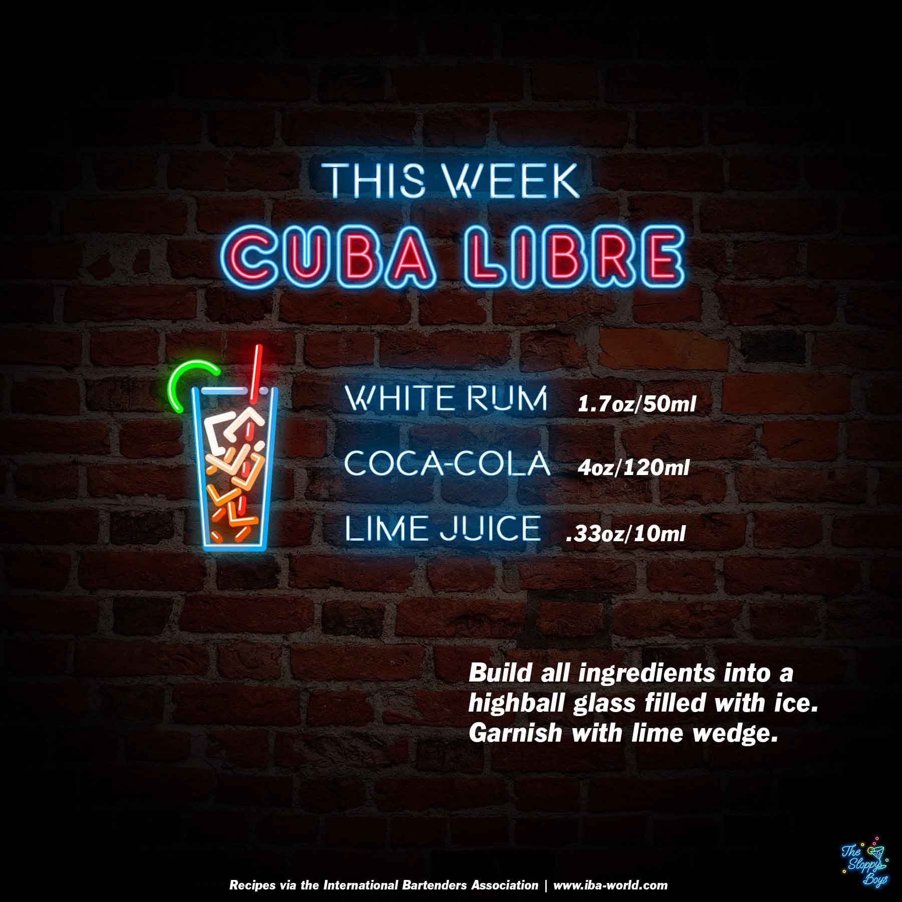

Sloppy Drinks
Podcast
About

Cuba Libre (Rum and Coke)
Ingredients
White Rum (1.7oz/50ml)
Coca-Cola (4oz/120ml)
Lime Juice (.33oz/10ml)
Steps
Build all ingredients into a highball glass filled with ice.
Garnish with lime wedge.
Notes
Episode 12 - Cuba Libre (January 8, 2021)
IBA Cuba Libre Recipe
Artwork by The Sloppy Boys